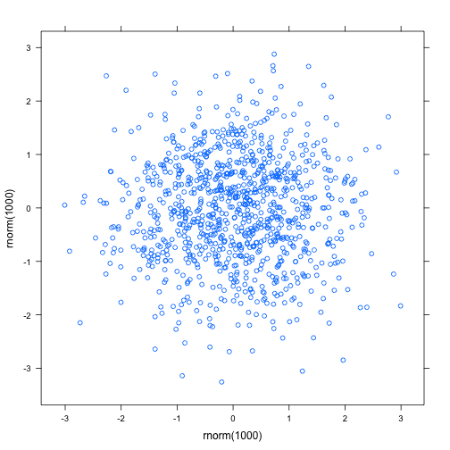

title: "LatticePlotting" author: "Rafik Margarayan, MD, PhD" date: "27 April 2014"
output: html_document
Lattice Plotting System
> xyplot(rnorm(1000)~rnorm(1000))

> set.seed(12345)
> dat <- data.frame(category=rep(c("Food", "Drinks"),20),
+ product=rep(c("Cheese", "Wine", "Bread", "Beer"), 10),
+ year=sort(rep(c(2004:2013),4)),
+ value=sort(rnorm(40)))
>
> dat <- dat[with(dat, order(category, year)),]
> # Change some of the default lattice settings
> my.settings <- canonical.theme(color=FALSE)
> my.settings[['strip.background']]$col <- "black"
> my.settings[['strip.border']]$col<- "black"
> xyplot(value ~ year | category,
+ groups=product, data=dat,
+ as.table=TRUE,
+ xlim=c(2003, 2016), # range of x-axis
+ scales=list(cex=c(1.1, 1.1), # increase font size
+ alternating=1, # axes labels left/bottom
+ tck = c(1,0)), # ticks only with labels
+ par.settings = my.settings,
+ cex=1.1, # change size of symbols
+ xlab=list(label="Year", fontsize=14),
+ ylab=list(label="Value", fontsize=14),
+ par.strip.text=list(col="white", font=2),
+ panel=panel.superpose,
+ panel.groups=function(x,y, group.number,...){
+ panel.xyplot(x,y,t="b",...)
+ panel.grid(v=-1, h=-1, lty=3)
+ xt <- x[x==max(x)] # find latest year
+ yt <- y[x==max(x)] # find value at latest year
+ panel.text(xt, yt, labels=levels(dat$product)[group.number],
+ pos=4, # show labels on right side
+ ...)
+ }
+ )

Note that the echo = FALSE parameter was added to the code chunk to prevent printing of the R code that generated the plot.